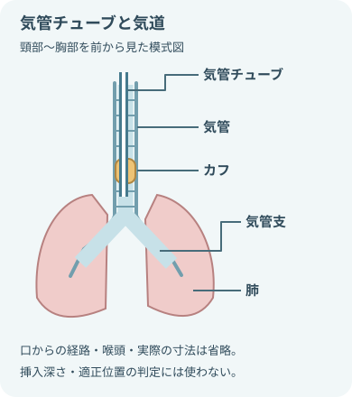
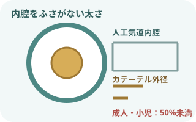
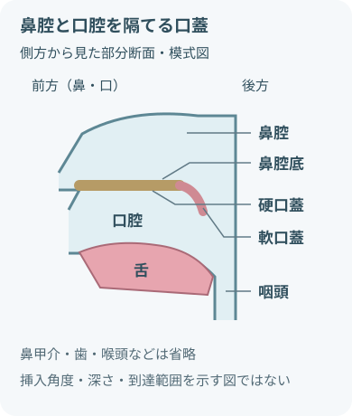

最初に押さえる注意事項
吸引は必要時に、短く行う
- 吸引の必要性を判断する情報
- 呼吸音
- 目に見える分泌物
- 咳嗽
- SpO₂
- 呼吸仕事量
- 人工呼吸器波形
- 定時だからという理由だけで、深い気管内吸引を繰り返さない。
- 陰圧をかけたまま挿入しない。
- 抵抗があれば押し込まない。
- 人工気道の吸引では、AARCは1回の吸引を最大15秒とする。
- 口腔・鼻腔の吸引時間は、患者ごとの指示と手順を確認する。
- いずれも患者の反応が悪ければ、規定の上限より早く中止する。
- 中止・再評価する変化
- 低酸素
- 徐脈
- 不整脈
- 血圧変化
- 強い苦痛
- 出血
これらの変化があれば中止して再評価する。
清潔と曝露対策
- 曝露リスクに合わせて選ぶ防護具
- 手袋
- マスク
- 眼の防護
- ガウンまたはエプロン
- 標準予防策を基本にする。
- 飛沫・体液曝露のリスクに合わせて防護具を選ぶ。
- 開放式の人工気道吸引は無菌操作で行う。
- 開放式気道吸引はエアロゾル曝露を伴い得る。
- 感染経路別予防策と換気・呼吸用防護具の指示を確認する。
吸引圧・深さ・時間を分けて考える

- 圧と時間には上限がある。
- 深さは固定のセンチメートルより、下記を優先する。深さを決める際に優先する項目
- 解剖
- 器具
- 患者ごとの規定長
- 鼻腔
- 吸引圧は必要最小限。
- 厚生労働省の喀痰吸引等研修では20kPa以下とする。
- 深さは下記で決める。鼻腔吸引の深さを決める項目
- 鼻腔の構造
- 分泌物の位置
- 患者ごとの指示
- 患者ごとの規定長
- 抵抗があれば無理に進めない。
- 口腔
- 吸引圧は必要最小限。
- 同研修では20kPa以下とする。
- 口腔内の分泌物へ届く範囲とし、咽頭後壁を強く刺激しない。
- 人工気道
- 下記に応じた必要最小限の圧を使う。吸引圧を判断する条件
- 患者
- 器具
- 施設の手順
- AARCは成人で陰圧の強さを200mmHg未満（約26.7kPa未満）に保つことを推奨する。
- これは目標設定値ではない。
- 人工気道の長さに合わせた浅い吸引を優先する。
- 深い吸引は浅い吸引で除去できない場合に限り、指示・手順に従う。
- 下記に応じた必要最小限の圧を使う。
- 13～20kPa：
- およそ100～150mmHg。
- 機器では陰圧の符号を含めた表示になる場合がある。
- 挿入長：
- 口腔・鼻腔・人工気道に共通する固定のセンチメートル値は使わない。
- 人工気道の種類・長さと患者ごとの規定長を確認する。
- 人工気道の吸引時間：
- AARCは1回の吸引を最大15秒とする。
- 上限まで続ける必要はなく、状態が悪化したら直ちに中止する。
- 数値の適用範囲：
- 厚生労働省の数値は喀痰吸引等研修の設定、AARCの推奨は人工気道を対象とする。
- 成人の圧上限を小児・新生児へ適用しない。
- 圧上限は目標設定値ではない。
- 吸引圧：カテーテル接続前にチューブを閉塞して設定値を確認する。
吸引が必要なサイン
一つではなく、変化を組み合わせる
- 呼吸音の変化
- 痰が絡む音
- 粗い副雑音
- 呼吸音の低下
- 目に見える分泌物を確認する部位
- 口腔
- 人工気道内
- 咳の変化
- 痰を出せない弱い咳
- 湿性咳嗽
- 酸素化・呼吸状態の変化
- SpO₂低下
- 呼吸数増加
- 努力呼吸
- チアノーゼ
- 人工呼吸器でみられる変化
- 気道内圧上昇
- 波形の鋸歯状変化
- 換気量低下
- 吸引後も改善しない場合は、分泌物以外の原因を考える。
- 低酸素だけを見て何度も吸引しない。
必要物品
部位と方式に合わせてそろえる
- 吸引回路
- 吸引器
- 接続チューブ
- 吸引ボトル
- 適切な種類・太さの吸引カテーテルまたはヤンカウアー
- 曝露リスクに合う防護具
- 手袋
- マスク
- 眼の防護
- ガウンまたはエプロン
- 観察物品
- パルスオキシメータ
- 聴診器
- 片付け・対応物品
- 廃棄物容器
- 必要時：酸素投与物品
- 必要時：蘇生物品
- 開放式人工気道吸引
- 滅菌手袋
- 滅菌カテーテル
カテーテルの太さと深さ

- 気管チューブは気管の内側にあり、気管は左右の気管支へ分かれる。
- 位置関係の模式図で、吸引カテーテルの挿入深さやチューブの適正位置を決めるものではない。

成人10～12Frは例。人工気道との比で選ぶ
- 成人の10～12Frは、よく使われる太さの一例
- 成人・小児の人工気道では、カテーテル外径がチューブ内腔の50%未満になるよう選ぶ
- 太すぎると換気・酸素化低下と強い陰圧を起こしやすい
- 細すぎると粘稠痰を除去できない場合がある

- 口蓋は鼻腔と口腔を隔て、前方が硬口蓋、後方が軟口蓋。
- 鼻腔・口腔の後方には咽頭が続く。
- 位置関係の模式図で、吸引カテーテルの挿入角度・深さ・到達範囲を指定しない。
部位ごとの進め方
- 口腔：見える分泌物へ。舌・口腔粘膜を傷つけない
- 鼻腔：鼻腔底に沿って、顔面に対し上向きではなく後方へ
- 人工気道：チューブ・カニューレの先端付近までの浅い吸引を基本
- 挿入を無理に進めないサイン
- 抵抗
- 出血
- 強い咳
- 疼痛
これらのサインがあれば無理に進めない。
吸引前の観察
- 呼吸状態
- 呼吸数
- 深さ
- リズム
- 努力呼吸
- 胸郭運動
- チアノーゼ
- 肺音
- 左右差
- 副雑音
- 呼吸音減弱
- 痰が移動する音
- 酸素化
- SpO₂
- 酸素投与方法
- 酸素流量
- 人工呼吸器設定
- 痰と喀出力
- 量
- 色
- 粘稠度
- 臭い
- 血液混入
- 喀出力
- 循環・意識
- 脈拍
- 血圧
- 意識
- 表情
- 苦痛
- 不安
- 人工気道
- 固定位置
- 接続
- カフ
- 回路
- アラーム
- 閉鎖式カテーテルの状態
吸引の基本手順
- 必要性を評価し、説明する
吸引の目的と方法を伝える。
基準値として確認する情報- 呼吸
- 肺音
- SpO₂
- 循環
- 痰
- 体位と物品を整える
禁忌がなければ上体を起こす。
準備する物品- 吸引器
- カテーテル
- PPE
- 酸素投与物品
- 観察物品
- 吸引圧を確認する
- 接続チューブを閉塞して設定圧を確認する。
- 必要最小限の圧から始める。
- 酸素化と清潔を準備する
- 人工気道では指示された方法で事前酸素化。
- 開放式は滅菌操作。
- 口腔・鼻腔は部位に合う清潔操作。
- 陰圧をかけずに挿入する
- 部位ごとの方向と規定深さまでゆっくり進める。
- 抵抗があれば中止する。
- 抜きながら短時間吸引する
- 必要に応じてカテーテルをゆっくり回し、短時間で抜去する。
- 人工気道ではAARCの最大15秒を上限とし、口腔・鼻腔は患者ごとの指示・手順を確認する。
- 上限まで続けず、状態が悪化したら直ちに中止する。
- 強い上下運動をしない。
- 回復を待って再評価する回復の確認
- 呼吸
- 脈拍
- SpO₂
- 表情
再吸引は回復を待ち、必要性が残る場合だけ行う。
- 片づけ、観察・記録する記録する情報
- 痰の性状
- 吸引回数
- 患者反応
- 前後の変化
手指衛生を行う。

人工気道吸引で追加すること
- 開放式と閉鎖式のどちらを使うか、下記で確認する。吸引方式を選ぶ際の確認
- 人工呼吸器
- 感染対策
- 患者状態
- 成人・小児では吸引前の酸素化を行う。
- 酸素濃度と時間は患者ごとの指示に従う。
- 開放式では、回路を外す時間を最小限にする。開放式で使う滅菌物品
- 滅菌手袋
- 滅菌カテーテル
- 浅い吸引を基本にし、深い吸引は浅い方法で除去できない場合に限る。
- 生理食塩液を気道へルーチンに注入しない。
- 痰が粘稠な場合に再評価
- 加湿
- 体位
- 全身水分
- 薬剤
- 気道クリアランス方法
- 吸引後、元の指示へ戻したか確認
- 人工呼吸器設定
- アラーム
- 接続
- 酸素濃度
中止して応援を呼ぶサイン
吸引を続けるほど悪化することがある
- 中止・応援要請：酸素化・呼吸
- 急なSpO₂低下
- チアノーゼ
- 無呼吸
- 中止・応援要請：循環
- 徐脈
- 頻脈
- 不整脈
- 血圧の大きな変化
- 中止・応援要請：患者の反応
- 意識低下
- 強い苦痛
- 激しい咳
- 嘔吐
- 中止・応援要請：出血
- 鮮血
- 出血の増加
- 中止・応援要請：挿入の異常
- カテーテルの強い抵抗
- 挿入不能
- 吸引後も換気・酸素化が改善しない
- 吸引を中止して下記を評価し、応援を呼ぶ。中止時に評価する項目
- 酸素化
- 換気
- 循環
- 人工気道の閉塞が疑われる場合は、院内の気道緊急対応へ移る。
吸引後の観察・記録
「取れた量」だけで終わらない
- 呼吸・酸素化の変化
- 呼吸数
- 努力呼吸
- SpO₂
- 肺音
- 循環・意識・苦痛
- 脈拍
- 血圧
- 意識
- 表情
- 苦痛
- 吸引した痰の性状
- 量
- 色
- 粘稠度
- 臭い
- 血液混入
- 吸引の実施条件
- 吸引部位
- カテーテル
- 設定圧
- 挿入深さ
- 1回の時間
- 回数
- 処置前後の経過
- 事前酸素化
- 吸引中の変化
- 中止理由
- 回復までの経過
出典
- NCI SEER Training「Mouth」— 口腔・口蓋の解剖
- NCI SEER Training「Pharynx」— 鼻腔・口腔と咽頭の関係
- NHLBI「How the Lungs Work — The Respiratory System」
- 厚生労働省「喀痰吸引等研修テキスト」
- 厚生労働省「喀痰吸引等研修 指導者用マニュアル」
- 厚生労働省「医療安全対策ネットワーク整備事業：気管切開」
- American Association for Respiratory Care, Artificial Airway Suctioning Clinical Practice Guidelines 2022
- PubMed, AARC Clinical Practice Guidelines: Artificial Airway Suctioning
- CDC, Standard Precautions: PPE during suctioning